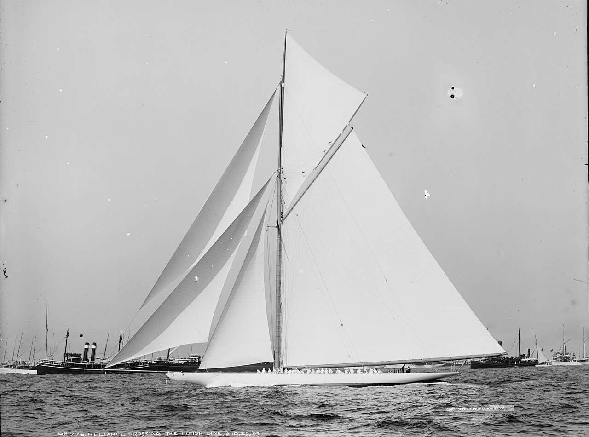
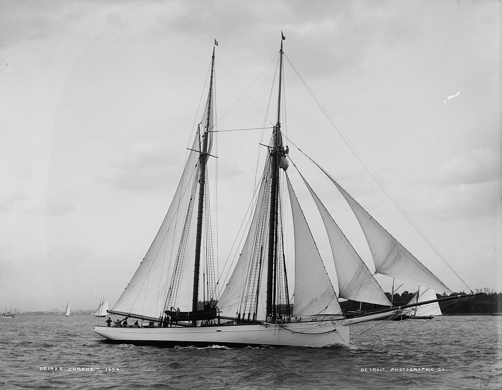
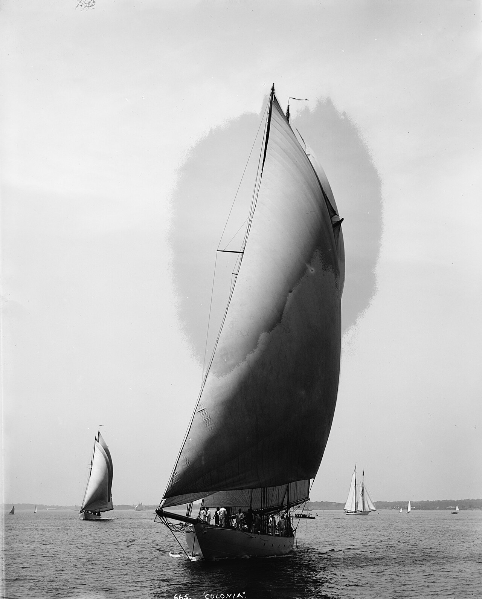
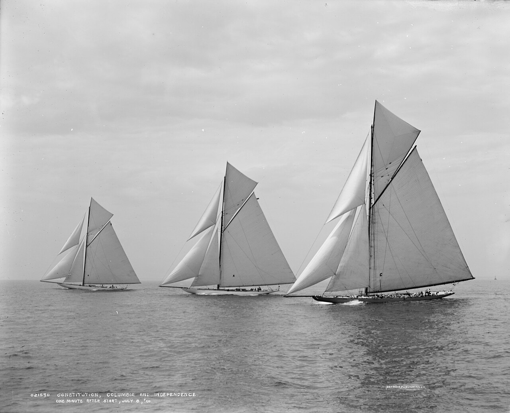
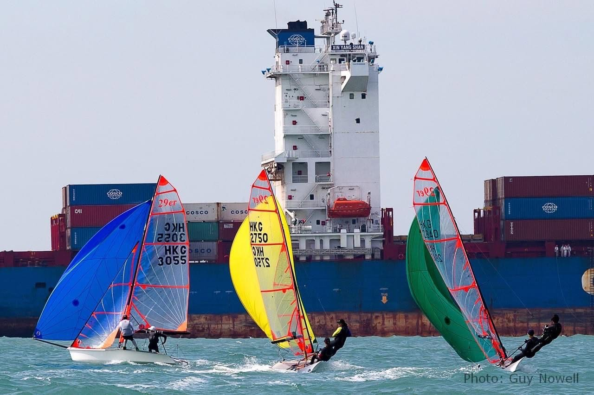
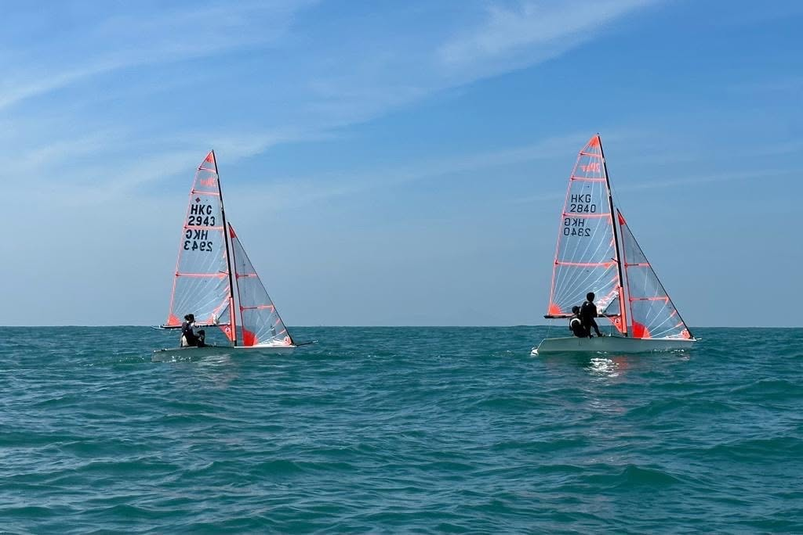

Oct 2025 to Jul 2028
University of Warwick
BSc Economics and Management. Expected 1st Class (1st year achieved).
Economics and Management, University of Warwick. Head of Portfolio Management, Warwick Hedge Fund Society.




I raced 29ers. Now I pitch stocks.
I'm Jayden, an Economics student at the University of Warwickwho enjoys pitching stocks
Through Warwick Hedge Fund Society, I've successfully pitched listed equities in major UK stock pitching competitions
Reddit. 2nd of 250 teams, Varsity 2026.
Long. The market overreacted to user-growth volatility and missed durable ad pricing power and irreplaceable AI licensing data. Pitched to analysts from Citadel, Fidelity Investments and Point72.
Duolingo. 1st place, Alpha X2.
Long. A profitable learning leader with sticky subscribers, priced on negative sentiment instead of fundamentals.
Oct 2025 to Jul 2028
BSc Economics and Management. Expected 1st Class (1st year achieved).
Jan 2019 to Jul 2025
International Baccalaureate 40/45, with maximum scores in Mathematics and Physics. 11 GCSEs: four A*, two 9s, five As.
Aug to Sep 2026
Financial Services Consulting Intern
Jul to Sep 2025
Investment & Asset Liability Management Intern
Oct 2025 to present
Pitching listed equities competitively and leading a team of 6 to actively manage the society's fund.
Competitions
Programming, data
Python (NumPy, Pandas, Torch, TensorFlow / Keras, Matplotlib), Excel, Kaggle, VBA
Financial
Bloomberg Market Concepts, BQuant, S&P Global, 3-statement modelling and DCFs
Languages
English (native), Mandarin (conversational), Cantonese (conversational)
Python & AI, Scuba diving (NAUI Master Scuba Diver), Wine (Welfare Officer, Warwick Wine Society), Go-karting, Golf

RHKYC Sharks Performance Team, Aug 2021 to May 2024.
